Coin your community defines, and a ledger that shows where it came from
A community can define any number of currencies — event coin, shop credit, a token that only spends during one festival. Members earn them, hold them, and send them to each other.
Currency is deliberately not an item type. Items are one row per instance, so each one carries its own history: this potion was granted to you in March and traded twice. Coin is fungible — asking which of your 250 came from a particular prompt is not a question with an answer. So currency gets a balance and a running statement instead.
As many as your community needs
Anyone can see how much exists
Send coin without staff involvement
Every movement, readable by members
Currencies lives under Community in the sidebar, not Administration — the numbers are public, only the actions are restricted.
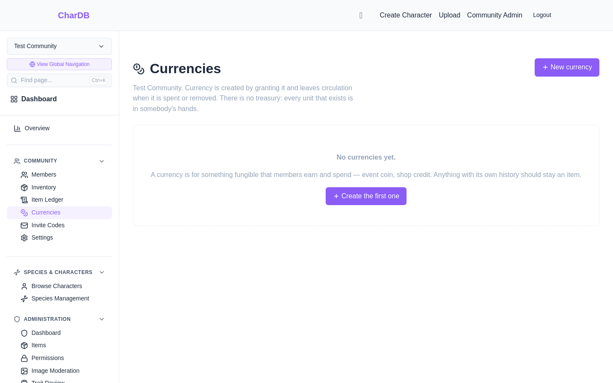
A currency needs a name and a short code. A symbol is optional; the form shows you exactly how amounts will read before you commit.
One checkbox decides whether members can give this to each other. Leave it on for money. Turn it off for something that should be earned rather than acquired — a prompt score, a rank, an event credit — and it can still be granted, spent and refunded, but it cannot be traded or sent to another member. The setting can be changed later either way, and changing it never touches a balance anyone already holds.
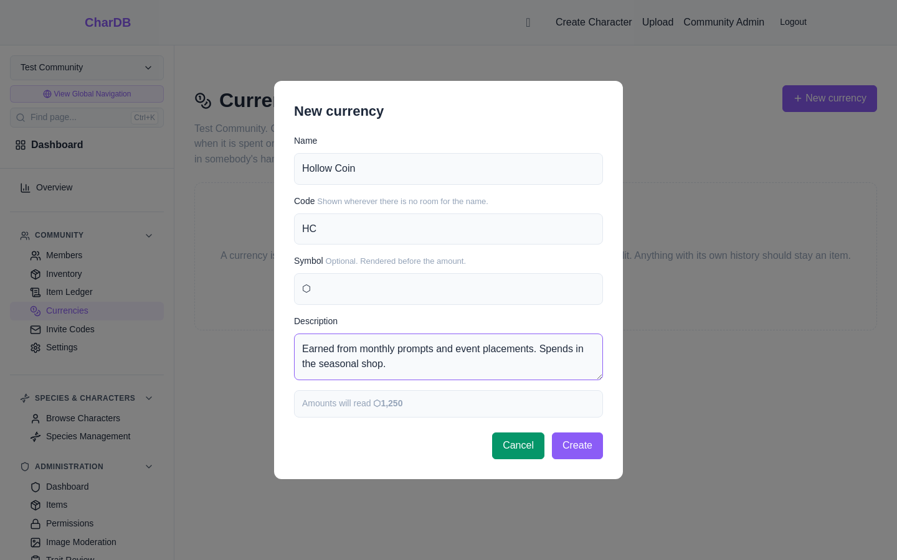
⬡1,250. Without one, they
read 1,250 HC.
hc when
HC exists is refused — otherwise two currencies would
render identically everywhere they appear.
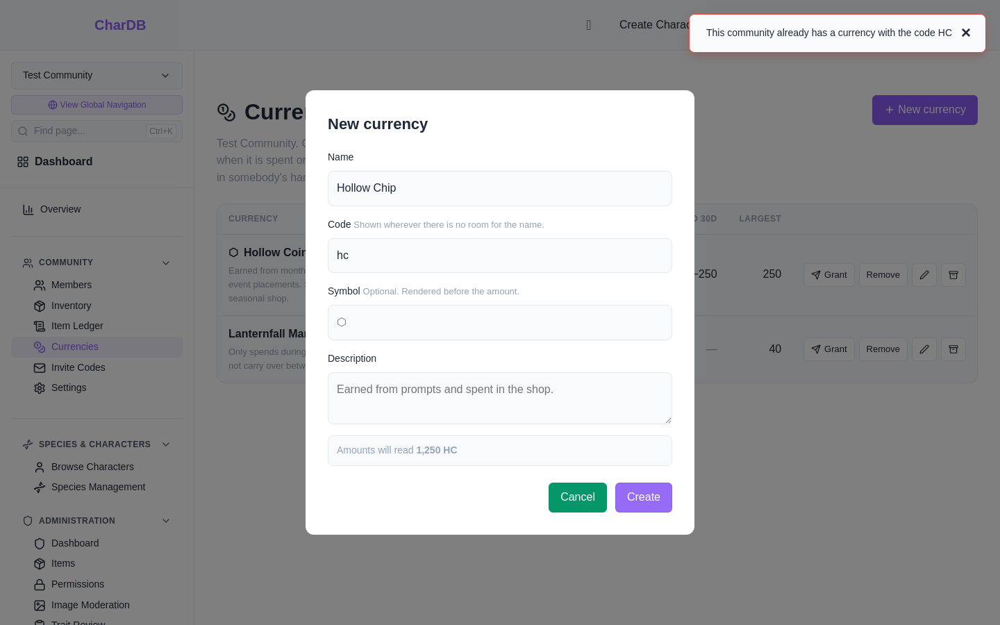
Granting is how currency comes into existence. Pick an amount, pick everyone who should receive it, and give a reason. Paying eleven people the same amount is one event, not eleven coincidences.
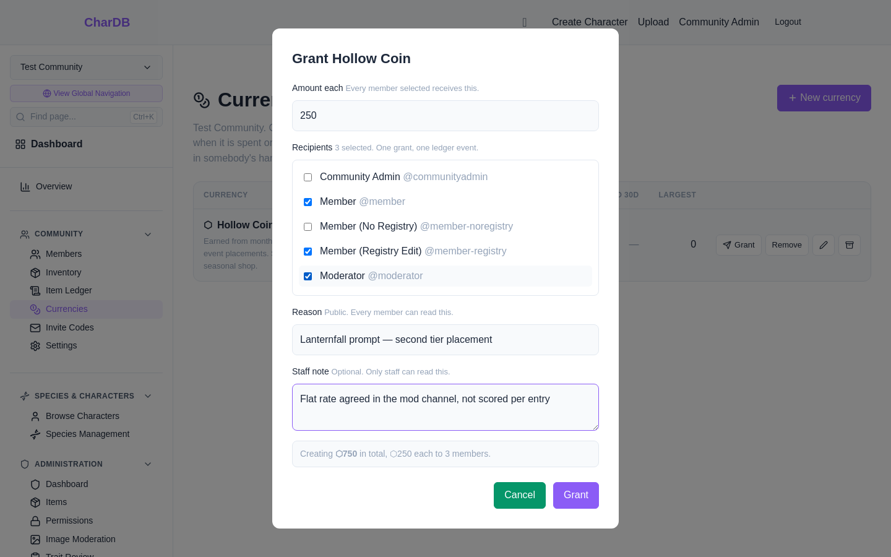
The reason is public — every member can read it in the ledger. The staff note is not, and is for the candid version.
canGrantItems. Currency reuses the item permissions
rather than adding its own, so whoever hands out prizes already has
what they need.
Granting from the Currencies page is deliberate and occasional. The other way coin enters circulation is routine: rewarding people for what they post, from inside the moderation queue they are already working through.
A moderator who can also grant currency sees an Award currency panel on each card, listing everyone the upload names.
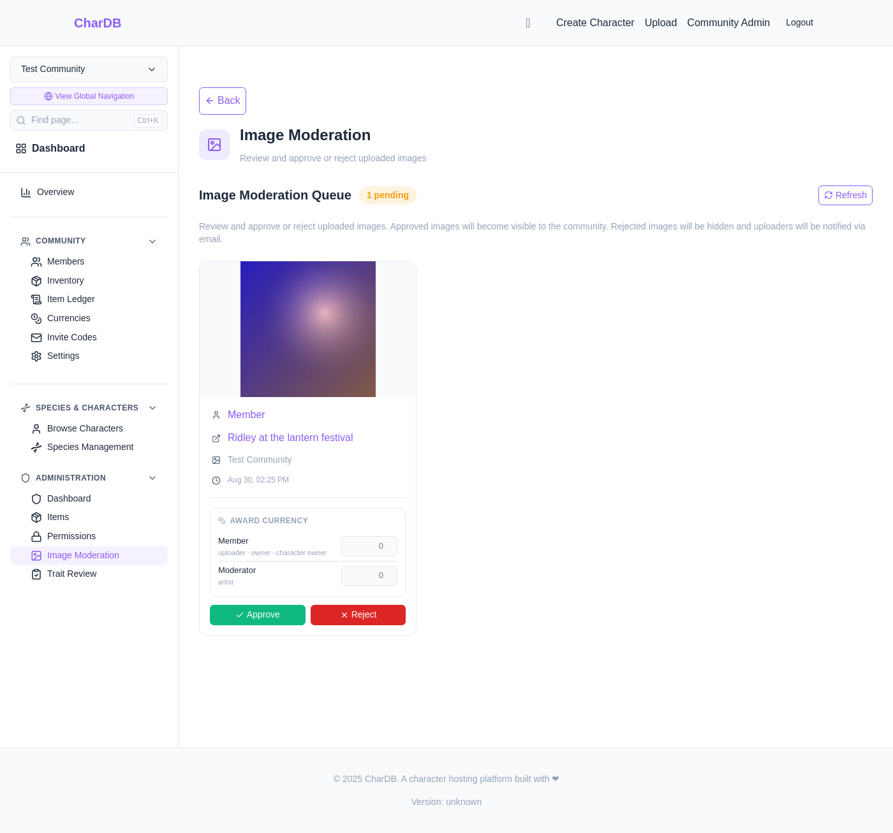
Fill in whatever each person should get and press Approve once. The running total is there so a mistyped figure is visible before it is paid, not after.
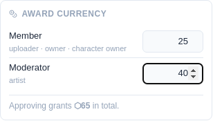
Leaving the amounts blank is normal. An approval with nothing filled in behaves exactly as it did before any of this existed.
Only moderators who can also grant currency. Moderating images and handing out rewards are separate permissions, and most moderators hold only the first — for them the queue is unchanged.
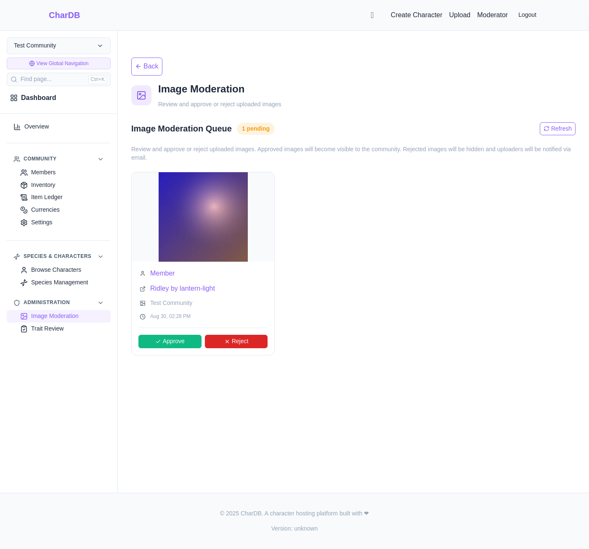
The third way currency arrives, after a staff grant and an approved upload: a member uses up an item that is worth something. A redemption ticket handed out as an event prize becomes coin when its holder decides to spend it, without staff doing anything at the moment it happens.
Staff set what a type pays on the item type itself, so the decision is made once rather than per member. The item is destroyed in the same breath as the payment — that is what stops the same ticket being redeemed twice — and both halves carry one identifier, so the coin can be traced back to the item it came from.
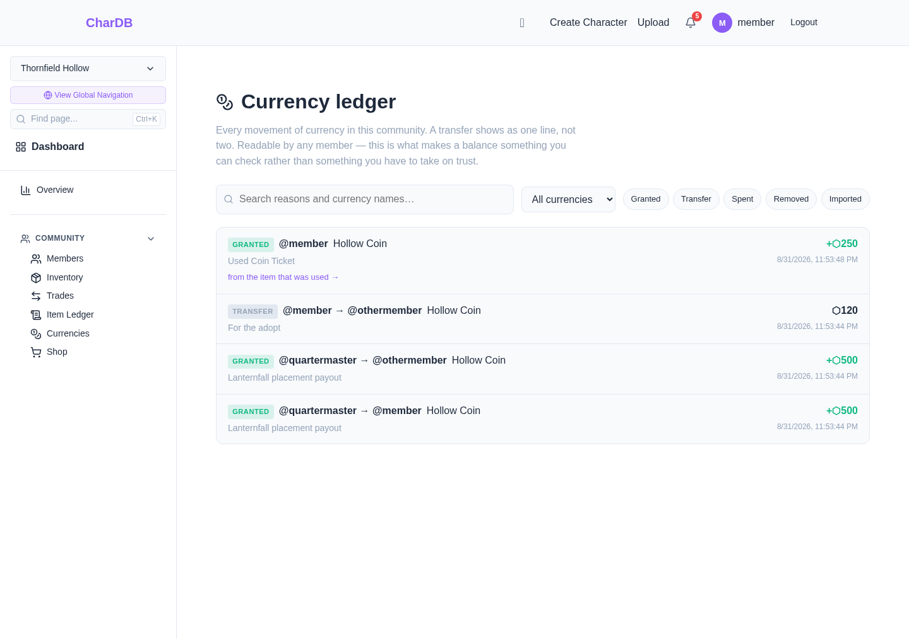
The table is the point of the page. Before granting five thousand more of something, you should be able to see how much already exists without navigating anywhere.
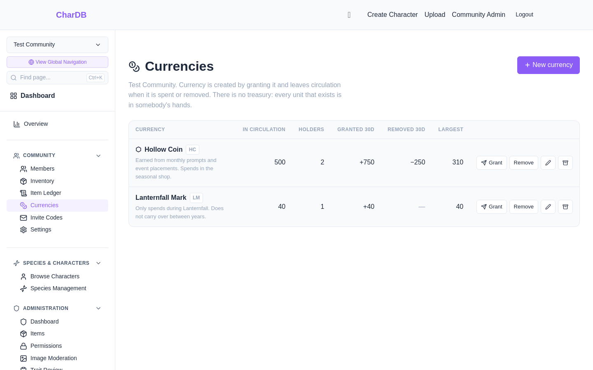
| Column | What it counts |
|---|---|
| In circulation | Every unit held by anybody, right now. |
| Holders | People with a non-zero balance. Not the same as circulation — 500 held by two people is 500 in circulation and 2 holders. |
| Granted 30d | Created over the last thirty days. |
| Removed 30d | Taken back or spent over the same window. Transfers are not counted: moving coin between members changes nothing about how much exists. |
| Largest | The biggest single balance. A number well clear of the others is worth a look. |
Any member can read this page. They simply get no buttons.
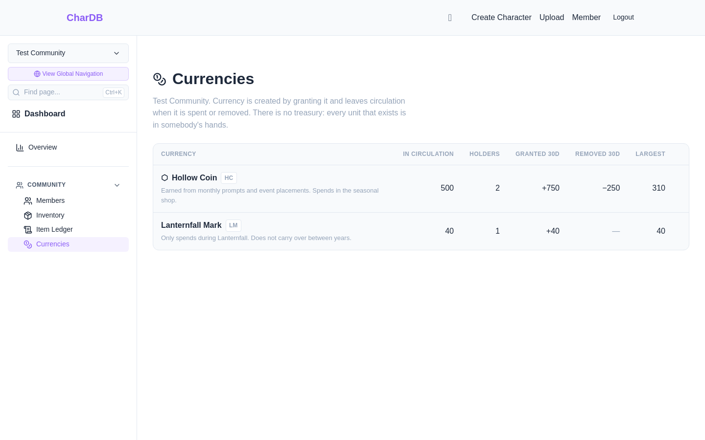
Currency sits above items on the inventory page rather than on a page of its own. Coin and items are one answer to "what does this person have", and splitting them would make a trade partner check two places.
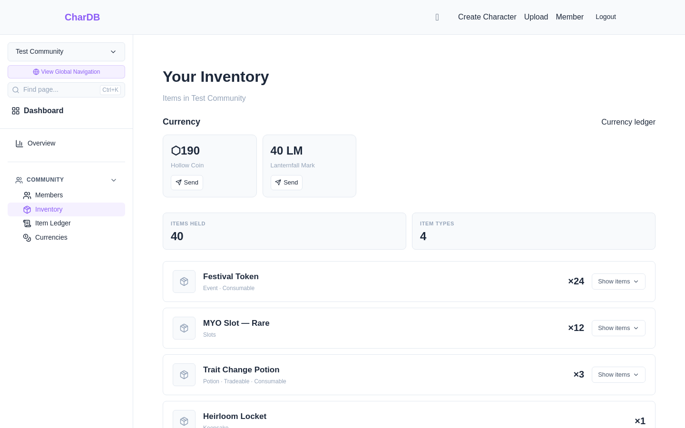
⬡190 for a
currency with a symbol, 40 LM for one without.
Members send their own coin without staff involvement. There is no permission for it: the balance is the authorisation — you cannot send what you do not hold.
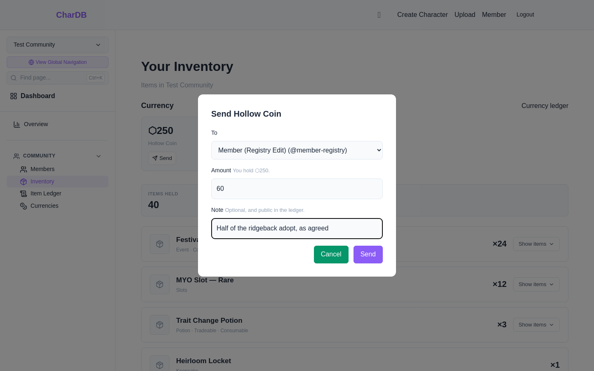
Balances never go negative. An attempt to send or remove more than someone holds is refused outright, and nothing moves — the recipient is not credited from a balance that could not fund it.
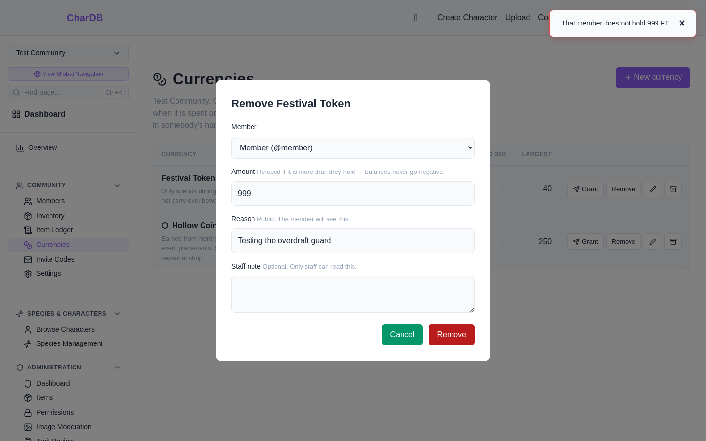
Viewing someone else's wallet shows their balances and no Send buttons. Balances are public within a community for the same reason item provenance is: you should be able to check a trade partner before the trade, not after.
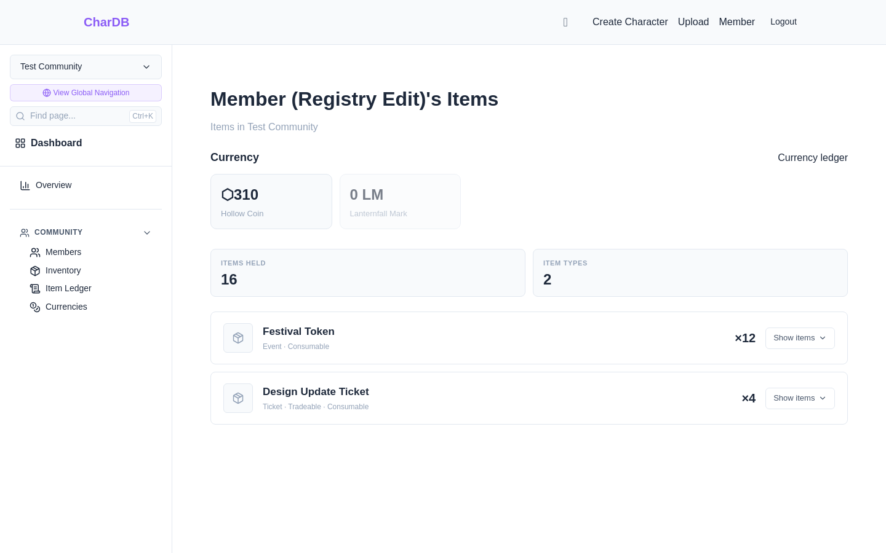
Every movement of currency in the community, newest first, filterable by kind and by currency, and searchable by reason.
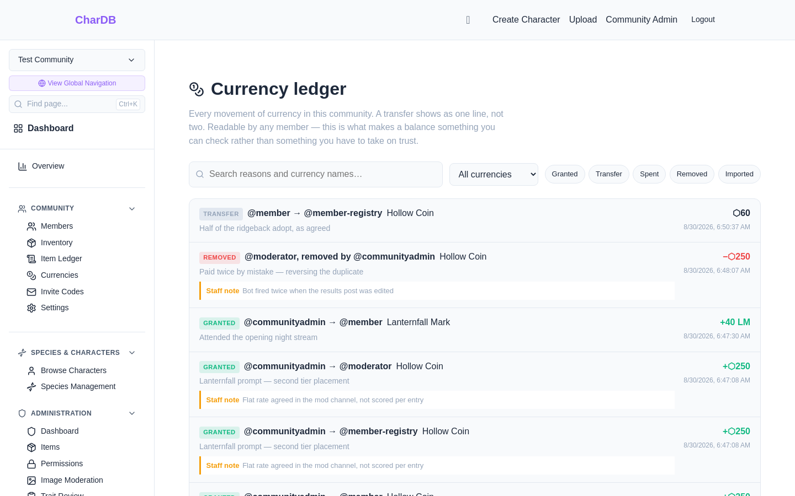
| Kind | What happened |
|---|---|
| Granted | Staff created coin into a member's balance. |
| Transfer | One member sent coin to another. |
| Spent | A member spent it. The coin leaves circulation rather than going anywhere. |
| Removed | Staff took coin back, as a correction or a penalty. |
| Imported | A balance that predates the ledger. |
A row created by an approval says so, and links back to the upload it paid for.
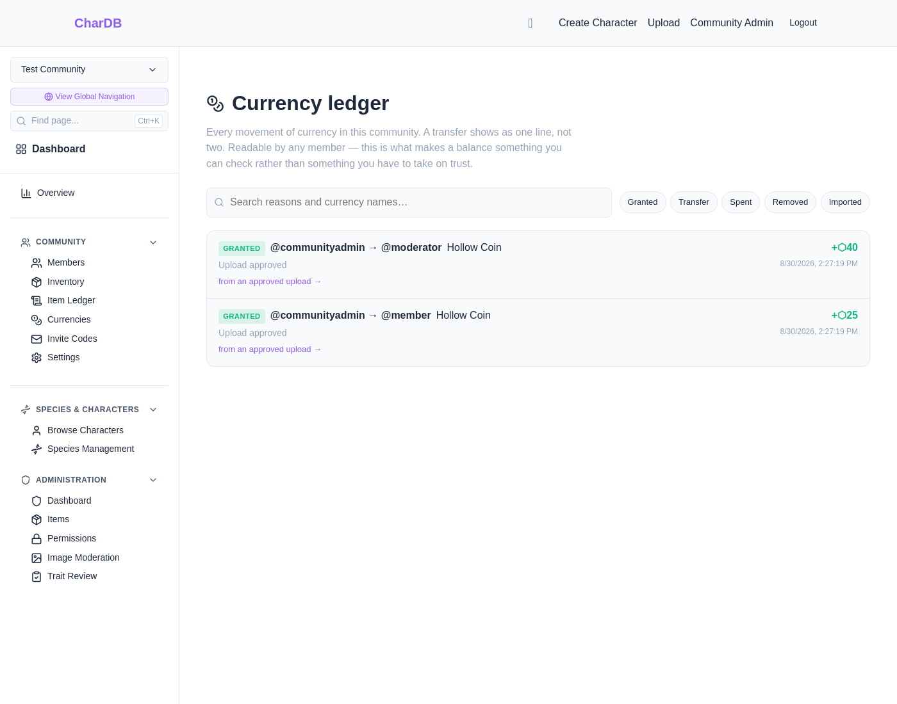
A bulk grant is not collapsed the same way. Each recipient genuinely received their own coin, and rolling eleven people into one line would hide who was paid.
The ledger is readable by any member of the community. Staff notes are the one exception, and the difference is worth seeing directly. Compare this with the screenshot in the previous step — same page, same events, same order.
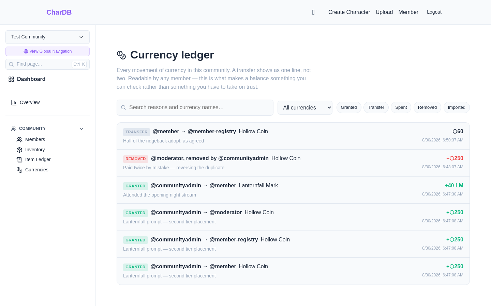
Currencies are archived, never deleted. An archived currency stops accepting new transactions, but every balance and every statement line stays readable.
An archived currency still appears in the supply table — coin already in members' hands does not vanish, so leaving it out would understate what exists. It disappears from wallets and from the grant flow, and can be restored at any time.